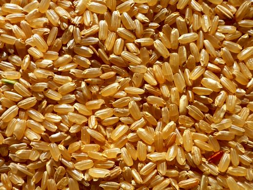
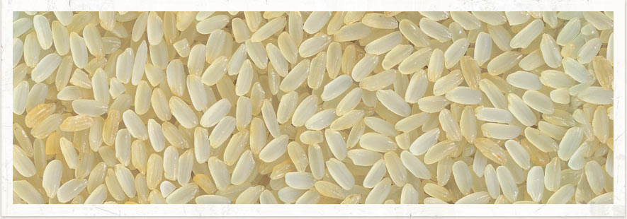
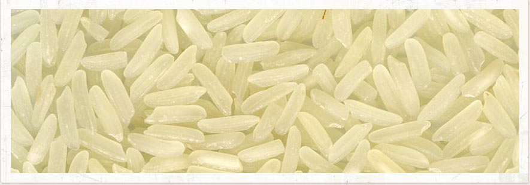
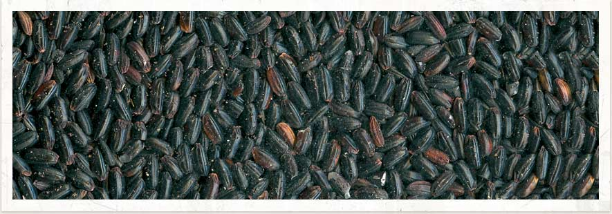

Torna indietro
Torna indietro
Conserva tutte le proprietà nutritive ed è ricco di fibre, proteine e sali minerali poichè non subisce il processo di raffinamento e sbiancatura del tipo brillato
Riso integrale
Si ottiene sottoponendo il riso grezzo ad uno speciale processo di precottura.
I suoi chicchi conservano le caratteristiche nutrizionali tipiche del riso integrate.
Sopporta cotture lunghissime e non scuoce mai.
Riso Parboiled: è prodotto con una lavorazione che ha origini antichissime.
Il riso integrale viene immerso in acqua calda per sciogliere le vitamine e i sali minerali
contenuti nel rivestimento esterno e nel germe.
Così questi principi nutritivi sono trasferiti nel chicco e sigillati nel suo nucleo, per mezzo del vapore.
Ha una pasta molto compatta e chicchi lunghi e affusolati. Resiste bene alla cottura ed è indicato per risotti e risi imbottiti. E' la varietà più utilizzata nel procedimento parboiled.
Riso Ribe Parboiled
Ha una grana lunga e cristallina. Quando cuoce, emette un caratteristico ed esotico profumo di spezie. Perfetto se abbinato a piatti a base di carne, pesce o verdura, come contorno, all'uso orientale.
Riso Thai
Ha la particolarità di avere un chicco di color viola-nero e di contenere preziose vitamine e sostanze antiossidanti. Il suo nome deriva dalla suggestiva credenza che questo riso avesse proprietà afrodisiache
Riso Venere